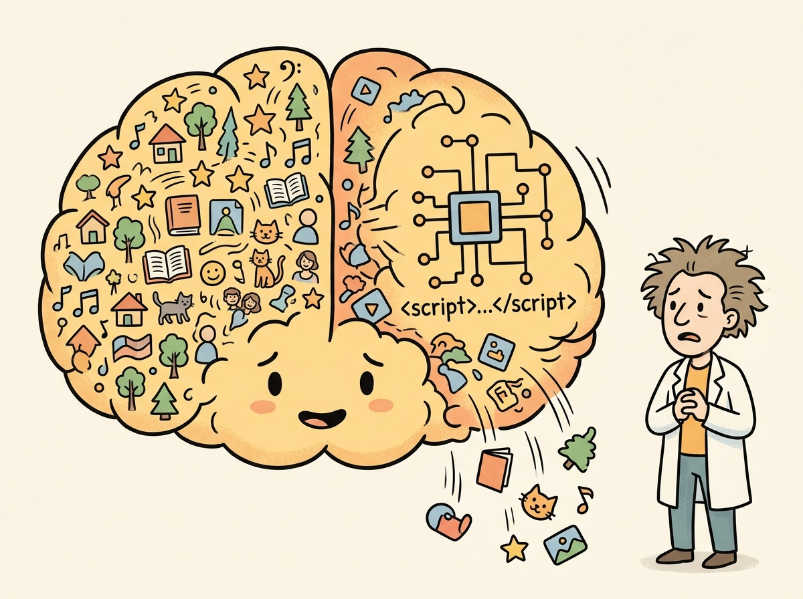

"The loss curve went down. The eval metrics went up. The model still produced nonsense. Welcome to supervised fine-tuning, where sanity checks are not optional."
Finetune AI Agent

Prerequisites
This section builds on fine-tuning basics from Section 14.1: When and Why to Fine-Tune and data preparation covered in Section 14.2: Data Preparation for Fine-Tuning.
Supervised fine-tuning (SFT) is the core technique for teaching a pre-trained model to follow instructions and produce specific outputs. In SFT, you train on input/output pairs where the loss is computed only on the output tokens (the assistant's response), not the input tokens (the user's prompt). Building on the data preparation from Section 14.2, this section walks through the complete SFT workflow using Hugging Face's TRL library, from loading the model to selecting hyperparameters, configuring gradient accumulation, and monitoring training with Weights & Biases and TensorBoard.
1. The SFT Training Loop Intermediate
At its core, SFT modifies the standard causal language modeling objective in one important way: the loss is masked so that gradient updates come only from predicting the assistant's response tokens. The model still sees the full conversation during the forward pass (for context), but only the response tokens contribute to the loss. This teaches the model what to generate rather than what to predict about the user's input. Figure 14.3.2 visualizes this masking scheme. Code Fragment 14.3.1 shows this approach in practice.
The loss masking strategy in SFT reflects a principle from educational psychology called the "desirable difficulty" framework (Bjork, 1994). The model sees the full conversation (including the user prompt) as context, but only receives a learning signal from the response tokens. This is analogous to how a student benefits from reading the problem statement (exposure) but only learns by practicing the solution (active retrieval). If the model were also trained to predict the prompt tokens, it would waste capacity learning to mimic user writing styles, a form of what cognitive scientists call "irrelevant encoding." The masking ensures that every gradient signal pushes the model toward the specific skill you want: generating good responses, not parroting questions. This same principle appears in curriculum design and instructional theory, where the distinction between "studying the question" and "practicing the answer" determines learning efficiency.
1.1 Complete SFT Script with TRL
The following implementation (Code Fragment 14.3.1) shows this approach in practice.
# Configure PyTorch training with gradient accumulation and mixed precision
# These settings control memory usage and effective batch size
import torch
from datasets import load_dataset
from transformers import AutoModelForCausalLM, AutoTokenizer, BitsAndBytesConfig
from trl import SFTTrainer, SFTConfig
# 1. Load model and tokenizer
model_name = "meta-llama/Llama-3.1-8B-Instruct"
tokenizer = AutoTokenizer.from_pretrained(model_name)
# Ensure pad token is set (required for batched training)
if tokenizer.pad_token is None:
tokenizer.pad_token = tokenizer.eos_token
model = AutoModelForCausalLM.from_pretrained(
model_name,
torch_dtype=torch.bfloat16,
device_map="auto",
attn_implementation="flash_attention_2", # Faster training
)
# 2. Load and prepare dataset (ChatML/messages format)
dataset = load_dataset("json", data_files={
"train": "data/train.jsonl",
"validation": "data/val.jsonl"
})
# 3. Configure SFT training
sft_config = SFTConfig(
output_dir="./checkpoints/llama-sft",
# Core hyperparameters
num_train_epochs=3,
per_device_train_batch_size=4,
per_device_eval_batch_size=4,
gradient_accumulation_steps=8, # Effective batch = 4 * 8 = 32
learning_rate=2e-5,
weight_decay=0.01,
warmup_ratio=0.1, # 10% of steps for warmup
lr_scheduler_type="cosine",
# Sequence configuration
max_seq_length=2048,
packing=True, # Enable sequence packing
# Precision and optimization
bf16=True, # Use bfloat16 mixed precision
gradient_checkpointing=True, # Trade compute for memory
gradient_checkpointing_kwargs={"use_reentrant": False},
# Logging and evaluation
logging_steps=10,
eval_strategy="steps",
eval_steps=100,
save_strategy="steps",
save_steps=100,
save_total_limit=3, # Keep only 3 best checkpoints
load_best_model_at_end=True,
metric_for_best_model="eval_loss",
# Monitoring
report_to="wandb", # or "tensorboard"
run_name="llama-8b-sft-v1",
# Reproducibility
seed=42,
data_seed=42,
)
# 4. Create trainer and start training
trainer = SFTTrainer(
model=model,
args=sft_config,
train_dataset=dataset["train"],
eval_dataset=dataset["validation"],
processing_class=tokenizer,
)
# 5. Train
trainer.train()
# 6. Save the final model
trainer.save_model("./models/llama-sft-final")
tokenizer.save_pretrained("./models/llama-sft-final")The following snippet in Code Fragment 14.3.2 demonstrates the implementation.
# Calculating effective batch size
def compute_effective_batch_size(
per_device_batch_size: int,
gradient_accumulation_steps: int,
num_gpus: int = 1
) -> dict:
"""Calculate effective batch size and training throughput."""
effective_batch = per_device_batch_size * gradient_accumulation_steps * num_gpus
return {
"per_device_batch_size": per_device_batch_size,
"gradient_accumulation_steps": gradient_accumulation_steps,
"num_gpus": num_gpus,
"effective_batch_size": effective_batch,
"optimizer_steps_per_epoch": "num_examples / effective_batch_size",
}
# Common configurations
configs = [
(2, 16, 1), # Single GPU, small memory
(4, 8, 1), # Single GPU, moderate memory
(4, 4, 4), # 4 GPUs, distributed
(8, 2, 8), # 8 GPUs, large cluster
]
print(f"{'Per-device':>12} {'Grad Accum':>12} {'GPUs':>6} {'Effective BS':>14}")
print("-" * 50)
for pd_bs, ga, gpus in configs:
result = compute_effective_batch_size(pd_bs, ga, gpus)
print(f"{pd_bs:>12} {ga:>12} {gpus:>6} {result['effective_batch_size']:>14}")Mental Model: The Dial and the Dashboard. Think of SFT hyperparameters as dials on a machine. The learning rate dial controls how aggressively the model updates its weights: too high and it forgets everything it knew; too low and it barely learns anything new. The batch size dial controls how much data the model "sees" before each update. The key insight is that these dials interact: a larger effective batch size smooths the gradient signal, which means you can safely turn up the learning rate. Monitor your eval loss dashboard at every checkpoint. If the train loss drops but eval loss rises, you have turned the dials too far.
Code Fragment 14.3.3 compares three common learning rate schedules side by side.
# Visualizing different schedulers
from transformers import get_scheduler
import torch
def visualize_schedulers(
total_steps: int = 1000,
warmup_steps: int = 100,
learning_rate: float = 2e-5
):
"""Compare learning rate schedules side by side."""
schedules = {}
for sched_type in ["cosine", "linear", "constant_with_warmup"]:
# Create a dummy optimizer
param = torch.nn.Parameter(torch.zeros(1))
optimizer = torch.optim.AdamW([param], lr=learning_rate)
scheduler = get_scheduler(
name=sched_type,
optimizer=optimizer,
num_warmup_steps=warmup_steps,
num_training_steps=total_steps,
)
lrs = []
for step in range(total_steps):
lrs.append(optimizer.param_groups[0]["lr"])
optimizer.step()
scheduler.step()
schedules[sched_type] = lrs
# Print sample points
checkpoints = [0, 50, 100, 250, 500, 750, 999]
print(f"{'Step':>6} {'Cosine':>12} {'Linear':>12} {'Constant':>12}")
print("-" * 44)
for step in checkpoints:
print(f"{step:>6} {schedules['cosine'][step]:>12.2e} "
f"{schedules['linear'][step]:>12.2e} "
f"{schedules['constant_with_warmup'][step]:>12.2e}")
return schedules
schedules = visualize_schedulers()The following implementation (Code Fragment 14.3.4) shows this approach in practice.
# Sanity check: verify training is working correctly
def run_sanity_check(trainer, tokenizer, dataset, num_samples=3):
"""Quick sanity check before committing to a full training run."""
print("=" * 60)
print("SANITY CHECK")
print("=" * 60)
# 1. Check a few tokenized examples
print("\n1. Sample tokenized examples:")
for i in range(min(num_samples, len(dataset))):
example = dataset[i]
messages = example["messages"]
text = tokenizer.apply_chat_template(messages, tokenize=False)
tokens = tokenizer(text)["input_ids"]
print(f" Example {i}: {len(tokens)} tokens")
# Decode and check it looks reasonable
decoded = tokenizer.decode(tokens[:50])
print(f" First 50 tokens: {decoded[:100]}...")
# 2. Run a few training steps
print("\n2. Running 10 training steps...")
trainer.args.max_steps = 10
trainer.args.logging_steps = 1
result = trainer.train()
# 3. Check loss trajectory
logs = trainer.state.log_history
losses = [l["loss"] for l in logs if "loss" in l]
print(f" Loss trajectory: {[f'{l:.4f}' for l in losses]}")
if len(losses) >= 2:
if losses[-1] < losses[0]:
print(" [PASS] Loss is decreasing")
else:
print(" [WARN] Loss is not decreasing; check learning rate")
# 4. Generate a sample response
print("\n3. Sample generation:")
model = trainer.model
model.eval()
test_messages = [{"role": "user", "content": "Hello, how are you?"}]
inputs = tokenizer.apply_chat_template(
test_messages, return_tensors="pt", add_generation_prompt=True
).to(model.device)
with torch.no_grad():
output = model.generate(inputs, max_new_tokens=50, temperature=0.7)
response = tokenizer.decode(output[0][inputs.shape[1]:], skip_special_tokens=True)
print(f" Response: {response[:200]}")
print("\n" + "=" * 60)
print("Sanity check complete. Review above before full training.")
print("=" * 60)Show Answer
Show Answer
Show Answer
load_best_model_at_end=True). (2) Add regularization (increase weight_decay to 0.05 to 0.1). (3) Reduce the number of epochs. (4) Augment the training dataset with more diverse examples. (5) Try a lower learning rate to slow the rate of weight updates.Show Answer
Show Answer
Custom Training Loops with Accelerate
While TRL's SFTTrainer handles most fine-tuning needs, some workflows require custom training loops (for example, multi-task losses, custom gradient manipulation, or non-standard data pipelines). The HuggingFace accelerate library wraps PyTorch training code so it runs unchanged on a single GPU, multiple GPUs, or TPUs. You write standard PyTorch, then Accelerator handles device placement, gradient synchronization, and mixed precision. Code Fragment 14.3.5 shows the core pattern.
# pip install accelerate
from accelerate import Accelerator
from torch.utils.data import DataLoader
import torch
accelerator = Accelerator(mixed_precision="bf16")
# Standard PyTorch setup (model, optimizer, dataloader)
model = ... # your AutoModelForCausalLM
optimizer = torch.optim.AdamW(model.parameters(), lr=2e-5)
train_loader = DataLoader(dataset, batch_size=4, shuffle=True)
# Accelerate wraps everything for distributed + mixed precision
model, optimizer, train_loader = accelerator.prepare(
model, optimizer, train_loader
)
# Training loop: identical to single-GPU PyTorch
for batch in train_loader:
outputs = model(**batch)
loss = outputs.loss
accelerator.backward(loss) # replaces loss.backward()
optimizer.step()
optimizer.zero_grad()
# Launch with: accelerate launch --num_processes 4 train.pyaccelerate wraps a standard PyTorch loop for distributed training. The accelerator.prepare() call handles device placement and gradient synchronization; accelerator.backward() replaces the usual loss.backward(). Launch with accelerate launch to scale to multiple GPUs with zero code changes.Why SFT is necessary but not sufficient for alignment. SFT teaches the model what format to produce (instruction-following, structured outputs, appropriate length). But it cannot teach the model which of several plausible responses is better, because SFT only sees correct examples with no comparative signal. This is exactly the gap that RLHF and DPO address in Chapter 17: they introduce preference signals that teach the model to distinguish better from worse among plausible options.
Always hold out 10 to 20% of your data for validation. Check eval loss after every epoch and stop training when it starts increasing (early stopping). Fine-tuning can overfit in as few as 2 to 3 epochs on small datasets.
Key Takeaways
- SFT loss is masked: only response tokens contribute to the loss; prompt tokens are labeled -100 and ignored during backpropagation.
- Start with 2e-5 learning rate for 7B+ models, use cosine annealing with 5% to 10% warmup, and train for 2 to 3 epochs as a baseline.
- Gradient accumulation lets you simulate large batch sizes on limited hardware; effective batch size = per_device_batch x grad_accum_steps x num_gpus.
- Enable Flash Attention 2 and gradient checkpointing to maximize training efficiency and minimize memory usage.
- Monitor both train and eval loss at every checkpoint; a growing gap signals overfitting and calls for early stopping or more regularization.
- Run a sanity check (10 to 20 steps on a small subset) before every full training run to catch data format issues, OOM errors, and learning rate problems early.
Who: A senior ML engineer mentoring a junior engineer through their first SFT training run on Llama 2 13B for a customer service response generation task.
Situation: The junior engineer had prepared 15,000 training examples and was about to launch a full 3-epoch training run on 8 A100 GPUs, estimated to take 18 hours and cost $2,400.
Problem: The senior engineer noticed the junior had set the learning rate to 2e-4 (10x higher than recommended for a 13B model) and had not configured evaluation steps. Without monitoring, overfitting or divergence would not be detected until the full run completed.
Dilemma: They could fix the learning rate and hope for the best (risky with an untested dataset), add evaluation logging and watch the full run (18 hours of waiting), or run a quick sanity check on a small subset first to validate all settings.
Decision: They implemented a three-step sanity check protocol: (1) overfit on 20 examples for 50 steps to verify the model could learn, (2) run 200 steps on the full dataset with evaluation every 50 steps to check the loss curve, and (3) generate sample outputs at step 200 to qualitatively verify learning.
How: The sanity check took 12 minutes on a single GPU. Step 1 confirmed the model could memorize (training loss dropped to 0.1). Step 2 revealed the learning rate of 2e-4 caused loss oscillation after step 100. They reduced it to 2e-5, re-ran the 200-step check, and saw a smooth declining loss curve. Step 3 showed the model was already generating responses in the correct format.
Result: The 12-minute sanity check prevented what would have been a failed $2,400 training run. The corrected hyperparameters produced a model that achieved a 4.2/5 quality rating from human evaluators (compared to 3.8/5 for the baseline). The sanity check protocol became a mandatory pre-training step for the team.
Lesson: A 10-to-15-minute sanity check (overfit test, short loss curve, sample generation) before every full training run catches configuration errors that would otherwise waste hours of compute and thousands of dollars.
Hands-On Lab: Fine-Tune a Small Language Model with TRL
Objective
Fine-tune a small language model (SmolLM2-135M) on a custom instruction dataset using Hugging Face TRL's SFTTrainer, monitor training with loss curves, and evaluate the result by comparing base versus fine-tuned outputs.
What You'll Practice
- Loading and configuring a causal language model for SFT
- Preparing a ChatML dataset with proper formatting
- Setting hyperparameters: learning rate, batch size, gradient accumulation
- Running SFTTrainer with loss masking on prompt tokens
- Comparing before/after generation quality
Setup
The following cell installs the required packages and configures the environment for this lab.
pip install transformers trl datasets accelerate torch matplotlibThis lab runs on a free Colab GPU (T4). No paid API keys required.
Steps
Step 1: Load the base model and capture baseline outputs
Load a small model that fits comfortably on a free Colab GPU. Save base model outputs for comparison after training.
from transformers import AutoModelForCausalLM, AutoTokenizer
import torch
model_name = "HuggingFaceTB/SmolLM2-135M-Instruct"
tokenizer = AutoTokenizer.from_pretrained(model_name)
model = AutoModelForCausalLM.from_pretrained(
model_name, torch_dtype=torch.float16, device_map="auto"
)
if tokenizer.pad_token is None:
tokenizer.pad_token = tokenizer.eos_token
print(f"Model parameters: {model.num_parameters():,}")
# TODO: Generate a baseline response to a test prompt
# Use tokenizer.apply_chat_template() to format as chat
test_prompt = "Explain what a neural network is in simple terms."
messages = [{"role": "user", "content": test_prompt}]
# Save this output to compare after fine-tuning
Hint
Use tokenizer.apply_chat_template(messages, tokenize=False, add_generation_prompt=True) to format the prompt, then model.generate() with max_new_tokens=150.
Step 2: Prepare the training dataset
Load a small instruction dataset and format it for SFT training.
from datasets import load_dataset
dataset = load_dataset("HuggingFaceH4/no_robots", split="train")
dataset = dataset.shuffle(seed=42).select(range(500))
print(f"Training examples: {len(dataset)}")
print(f"First example messages: {dataset[0]['messages'][:2]}")
# TODO: Define a formatting function for the chat template
def format_chat(example):
# Use tokenizer.apply_chat_template() on example["messages"]
# Return {"text": formatted_string}
pass
formatted_dataset = dataset.map(format_chat)
print(f"Formatted preview: {formatted_dataset[0]['text'][:300]}")
Hint
Use tokenizer.apply_chat_template(example["messages"], tokenize=False, add_generation_prompt=False) and return {"text": result}.
Step 3: Configure and launch SFT training
Set up SFTTrainer with appropriate hyperparameters for a small model and short training run.
from trl import SFTTrainer, SFTConfig
# TODO: Fill in the training configuration
training_args = SFTConfig(
output_dir="./sft-smollm2",
num_train_epochs=3,
per_device_train_batch_size=4,
gradient_accumulation_steps=2,
# TODO: Set learning_rate, logging_steps, max_seq_length,
# fp16, warmup_ratio, save_strategy, report_to
)
trainer = SFTTrainer(
model=model,
args=training_args,
train_dataset=formatted_dataset,
processing_class=tokenizer,
)
result = trainer.train()
print(f"Training loss: {result.training_loss:.4f}")
Hint
Good defaults: learning_rate=2e-5, logging_steps=10, max_seq_length=512, fp16=True, warmup_ratio=0.1, save_strategy="epoch", report_to="none".
Step 4: Plot the training loss curve
Visualize training loss to verify the model is learning properly.
import matplotlib.pyplot as plt
losses = [e['loss'] for e in trainer.state.log_history if 'loss' in e]
steps = [e['step'] for e in trainer.state.log_history if 'loss' in e]
plt.figure(figsize=(10, 5))
plt.plot(steps, losses, 'b-', alpha=0.7)
plt.xlabel('Training Step')
plt.ylabel('Loss')
plt.title('SFT Training Loss')
plt.grid(True, alpha=0.3)
plt.savefig('sft_loss_curve.png', dpi=100)
plt.show()
print(f"Final loss: {losses[-1]:.4f}")
Hint
Not all entries in log_history have a "loss" key (some are evaluation logs). Filter for entries containing "loss". The loss should decrease from ~2.5 to ~1.5 over 3 epochs.
Step 5: Compare base vs. fine-tuned outputs
Generate responses from the fine-tuned model and compare with baseline.
test_prompts = [
"Explain what a neural network is in simple terms.",
"Write a Python function to reverse a string.",
"What are three tips for giving a good presentation?",
]
for prompt in test_prompts:
messages = [{"role": "user", "content": prompt}]
formatted = tokenizer.apply_chat_template(
messages, tokenize=False, add_generation_prompt=True)
inputs = tokenizer(formatted, return_tensors="pt").to(model.device)
with torch.no_grad():
outputs = model.generate(
**inputs, max_new_tokens=200, temperature=0.7, do_sample=True)
response = tokenizer.decode(
outputs[0][inputs['input_ids'].shape[1]:], skip_special_tokens=True)
print(f"Prompt: {prompt}")
print(f"Response: {response}")
print("-" * 60)
Hint
For a fair comparison, save base model outputs before training (Step 1). Look for improvements in instruction following, formatting, and response quality.
Expected Output
- A training loss curve showing steady decrease from ~2.5 to ~1.5 over 3 epochs
- The fine-tuned model should produce more structured, instruction-following responses
- A saved model checkpoint in
./sft-smollm2(~300MB for SmolLM2-135M)
Stretch Goals
- Add a validation split and plot both training and validation loss to detect overfitting
- Experiment with learning rates (1e-5, 5e-5, 1e-4) and compare final loss values
- Try packing multiple short examples into a single sequence (
packing=Truein SFTConfig)
Complete Solution
from transformers import AutoModelForCausalLM, AutoTokenizer
from trl import SFTTrainer, SFTConfig
from datasets import load_dataset
import torch, matplotlib.pyplot as plt
model_name = "HuggingFaceTB/SmolLM2-135M-Instruct"
tokenizer = AutoTokenizer.from_pretrained(model_name)
model = AutoModelForCausalLM.from_pretrained(model_name, torch_dtype=torch.float16, device_map="auto")
if tokenizer.pad_token is None:
tokenizer.pad_token = tokenizer.eos_token
# Capture baseline
base_outputs = {}
for p in ["Explain what a neural network is in simple terms.",
"Write a Python function to reverse a string.",
"What are three tips for giving a good presentation?"]:
msgs = [{"role": "user", "content": p}]
fmt = tokenizer.apply_chat_template(msgs, tokenize=False, add_generation_prompt=True)
inp = tokenizer(fmt, return_tensors="pt").to(model.device)
with torch.no_grad():
out = model.generate(**inp, max_new_tokens=200, temperature=0.7, do_sample=True)
base_outputs[p] = tokenizer.decode(out[0][inp['input_ids'].shape[1]:], skip_special_tokens=True)
# Prepare data
dataset = load_dataset("HuggingFaceH4/no_robots", split="train").shuffle(seed=42).select(range(500))
def format_chat(ex):
return {"text": tokenizer.apply_chat_template(ex["messages"], tokenize=False, add_generation_prompt=False)}
formatted = dataset.map(format_chat)
# Train
args = SFTConfig(output_dir="./sft-smollm2", num_train_epochs=3, per_device_train_batch_size=4,
gradient_accumulation_steps=2, learning_rate=2e-5, logging_steps=10, max_seq_length=512,
fp16=True, warmup_ratio=0.1, save_strategy="epoch", report_to="none")
trainer = SFTTrainer(model=model, args=args, train_dataset=formatted, processing_class=tokenizer)
trainer.train()
# Plot
losses = [e['loss'] for e in trainer.state.log_history if 'loss' in e]
steps = [e['step'] for e in trainer.state.log_history if 'loss' in e]
plt.figure(figsize=(10,5)); plt.plot(steps, losses, 'b-'); plt.xlabel('Step'); plt.ylabel('Loss')
plt.title('SFT Loss'); plt.grid(True, alpha=0.3); plt.savefig('sft_loss_curve.png'); plt.show()
# Compare
for p in base_outputs:
msgs = [{"role":"user","content":p}]
fmt = tokenizer.apply_chat_template(msgs, tokenize=False, add_generation_prompt=True)
inp = tokenizer(fmt, return_tensors="pt").to(model.device)
with torch.no_grad():
out = model.generate(**inp, max_new_tokens=200, temperature=0.7, do_sample=True)
ft = tokenizer.decode(out[0][inp['input_ids'].shape[1]:], skip_special_tokens=True)
print(f"Prompt: {p}\nBASE: {base_outputs[p][:200]}\nFINE-TUNED: {ft[:200]}\n{'='*50}")
Research on selective fine-tuning identifies which layers and attention heads matter most for specific tasks, enabling targeted weight updates that reduce catastrophic forgetting. The NEFTune technique (adding noise to embedding vectors during fine-tuning) has shown surprising effectiveness at improving generalization with minimal computational overhead. An active frontier is understanding why SFT on very small, high-quality datasets (as few as 1,000 examples) can produce disproportionately large improvements in model behavior.
Exercises
Describe the supervised fine-tuning (SFT) training loop at a high level. What loss function is used, and why is the loss masked to only the assistant's response tokens?
Answer Sketch
SFT uses the standard causal language modeling loss (cross-entropy) on the next token prediction. The loss is masked so that only the assistant response tokens contribute to the gradient. This is because we want the model to learn to generate good responses, not to predict the user's input (which is given). Without masking, the model wastes capacity learning to predict the instruction text, which does not improve generation quality.
Explain the typical hyperparameter ranges for SFT: learning rate, batch size, number of epochs, and warmup ratio. Why is a lower learning rate preferred for fine-tuning versus pre-training?
Answer Sketch
Typical ranges: learning rate 1e-5 to 5e-5 (vs. 1e-4 to 3e-4 for pretraining), batch size 4 to 32, epochs 1 to 3, warmup ratio 0.03 to 0.1. Lower learning rates are preferred because the pre-trained weights already encode valuable knowledge; large updates would destroy these representations (catastrophic forgetting). The goal is to gently adapt the existing knowledge rather than overwrite it.
Write the key code snippets for fine-tuning a model using HuggingFace's SFTTrainer: loading the model, configuring training arguments, and launching training.
Answer Sketch
Load: model = AutoModelForCausalLM.from_pretrained('meta-llama/Llama-3-8B'). Configure: args = SFTConfig(output_dir='./output', num_train_epochs=2, per_device_train_batch_size=4, learning_rate=2e-5, warmup_ratio=0.05). Train: trainer = SFTTrainer(model=model, args=args, train_dataset=dataset, processing_class=tokenizer); trainer.train().
During SFT, your training loss decreases to 0.3 but validation loss starts increasing after epoch 1. Diagnose the issue and propose three mitigations.
Answer Sketch
Diagnosis: the model is overfitting to the training data, memorizing examples rather than learning generalizable patterns. Mitigations: (1) Reduce training to 1 epoch (early stopping at the validation loss minimum). (2) Increase dataset size with synthetic data augmentation. (3) Use a lower learning rate or add weight decay regularization. (4) Switch to LoRA, which constrains the number of trainable parameters and acts as an implicit regularizer.
Explain the concept of sequence packing for SFT efficiency. Why does packing multiple short examples into one sequence improve GPU utilization, and what precaution is needed for attention masking?
Answer Sketch
Without packing, short sequences are padded to the batch's maximum length, wasting compute on padding tokens. Packing concatenates multiple short examples into one sequence up to the maximum length, eliminating padding waste. Precaution: the attention mask must prevent tokens from one example from attending to tokens from another example within the same packed sequence. This requires a block-diagonal attention mask. Packing can improve training throughput by 2 to 5x for datasets with variable-length examples.
What Comes Next
In the next section, Section 14.4: Fine-Tuning via Provider APIs, we explore fine-tuning through provider APIs, using hosted services from OpenAI, Anthropic, and others.
The learning rate for fine-tuning is typically 10 to 100 times smaller than for pretraining. If pretraining is learning to speak a language, fine-tuning is learning a regional dialect: you want to refine, not overwrite.
Hugging Face. (2024). SFTTrainer: Supervised Fine-Tuning with TRL.
The primary API reference for the SFTTrainer class used in all code examples in this section. Covers configuration options, dataset formatting, loss masking, and integration with PEFT adapters. This should be open in a browser tab while working through the hands-on examples.
Introduces FlashAttention, which reduces attention computation from quadratic to near-linear memory by tiling and recomputation. FlashAttention is a practical prerequisite for efficient fine-tuning of models with long sequences. Understanding its memory savings is important for the GPU configuration discussed here.
Loshchilov, I. & Hutter, F. (2019). Decoupled Weight Decay Regularization. ICLR 2019.
Introduces AdamW, the optimizer used in virtually all modern fine-tuning workflows. The paper explains why decoupled weight decay outperforms L2 regularization with Adam. Understanding AdamW's behavior is essential for the hyperparameter tuning guidance in this section.
Smith, S. L. et al. (2018). Don't Decay the Learning Rate, Increase the Batch Size. ICLR 2018.
Demonstrates the equivalence between learning rate decay and batch size increase, providing theoretical justification for gradient accumulation strategies. This insight directly informs the batch size and learning rate configuration guidance in this section. Useful for teams optimizing training speed on limited hardware.
Touvron, H. et al. (2023). Llama 2: Open Foundation and Fine-Tuned Chat Models.
Documents Meta's complete fine-tuning recipe for Llama 2, including hyperparameter choices, training schedules, and safety training methodology. The Llama 2 recipe serves as a practical reference point for the SFT best practices discussed here. Recommended as a case study in production-grade fine-tuning.
Weights & Biases. (2024). Fine-Tuning LLMs: Best Practices Guide.
A practical guide covering experiment tracking, hyperparameter sweeps, and training monitoring with W&B. The guide complements the TensorBoard and W&B integration discussed in this section with additional tips for organizing fine-tuning experiments. Useful for teams adopting systematic experiment management.